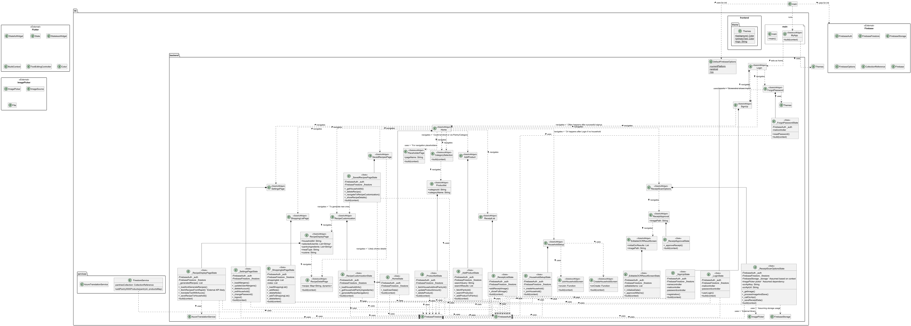

OnTheShelf is a mobile app aimed at transforming how we manage groceries and reduce inefficiencies in the kitchen. By intelligently tracking household items and learning from user habits, the app helps prevent food waste by making smarter consumption forecasts and offering practical meal suggestions based on available ingredients. With features like automatic shopping lists and personalized insights into spending and usage patterns, OnTheShelf empowers users to make informed decisions, reducing overbuying and waste. The app is designed to streamline daily grocery management, creating a more organized, waste-conscious, and collaborative experience for individuals and families alike.
Project Specification
Analysis & Requirements
Detailed Design
Final Report
Below is the class diagram referenced in the report. You may also download it for better clarity.
 ⬇ Download Class Diagram